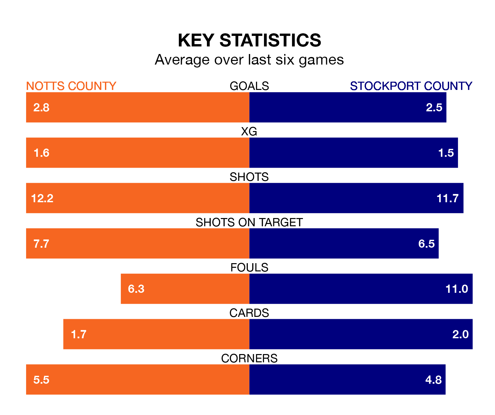

Saturday's match between Notts County and Stockport County promises to be one for the neutrals, as two of EFL League Two's most free-scoring sides go head-to-head.
Ahead of the game at Meadow Lane, Notts County and the Hatters sit top and second in the goal-scoring charts, with 60 and 56 goals respectively.
Striker Macaulay Langstaff leads the way for the home side, having bagged 20 goals in their 27 games to date.
And Isaac Olaofe has been the main man in the opponents' penalty box for Stockport, with 14 goals.
Stockport are top of the table after 27 games, of which they have won 16 and drawn six, earning 54 points.
Notts County are five places behind Stockport County in sixth, with 13 wins and four draws putting them on 43 points.
In Ben Hinchiffe, the Hatters can rely on one of the league's safest pair of hands. He has kept 10 clean sheets in his 27 appearances this season, and no 'keeper has prevented the opposition scoring more often in EFL League Two.
In the home team's net, Aiden Stone has four clean sheets in 20 games. He has conceded a goal every 56 minutes, 70% more often than the 97 minutes between goals for Hinchiffe.
In the last 10 years, Notts County and Stockport have played each other on seven occasions. Notts County won three of them, Stockport two, and they drew twice.
On average, Notts County scored 1.0 goal and the Hatters 1.1 in those matches.
Their last meeting was on December 22, when Stockport won 2-1 at home.
Notts County are in mixed form in EFL League Two, with two wins and a draw from their last six games.
With three wins and two draws over that period, the visitors' form is better – they have taken 11 points from 18, compared to Notts County's seven.
Notts County's last match was on January 13, a 5-5 draw against Grimsby Town, with Aaron Evans Nemane (two), David McGoldrick (two) and Langstaff getting the goals for Notts County.
Stockport beat Walsall 3-1 last time out, also on January 13, with Akil Wright, Olaofe and Paddy Madden on the scoresheet.
Updated: 14:53 (UTC), 16/01/24